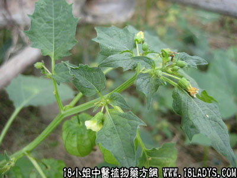

水灯笼草(中药材植物名:打额草)(植物科目:茄科)

古籍名：灯笼草《唐本草》。
别名：灯笼草、水灯笼、荷卜仔草、打卜草、打头泡。
植物名：打额草。
生长环境：本品为一年生草本，多生于田野、路旁、村庄附近草地上，以湿润肥沃而疏松的土壤上生长良好。
分布：广东各地村庄附近都有，我国南部各省也有分布。
入药部分：全草。
采集期：夏季。
自采地点：郊外潮湿地带。
性味：性凉、味苦。
功能：清热。
主治、用量和用法：1、癍痧发热：干用5钱至1两，清水煎服；2、疝气：干用1至2两，猪小肚1个，清水煎服；3、天疱疮：干用适量，煎水外洗患处。
验方1：（治疝气方）水灯笼草1两、黄皮根1两、清水四碗，煎成一碗服。
（方解）水灯笼草寻小肠膀胱之湿热，有利水作用；黄皮根入肝，宣通其气；宜气化湿，其疝自愈。
（方歌）膀胱湿热疝气成，灯笼草合黄皮根，两味组成同煎服，行气利尿自通亨。
验方2：（治癍痧方）水灯笼草5钱、海金沙藤5钱、狮子滚球5钱、老虎脷5钱、清水四碗，煎成一碗服。
（方解）水灯笼草、苦以泄热；狮子滚球、老虎脷清热解毒；海金沙藤利水，使热毒从小便而出。
（方歌）热毒邪深其癍痧，灯笼草与海金沙，狮子滚球老虎脷，清热解毒效堪夸。
参考资料：《广东中医锦方选集第一集》汕头公园联合诊所第二门诊部介绍：灯笼草2钱、骨苦楝2钱、捶烂和白酒外贴治阑尾炎，数日全愈，可免开刀。并介绍内服汤药入下：白芍2钱、青皮2钱、枳壳1钱半、麦芽3钱、川朴一钱半、火麻仁4钱、胡麻3钱、泽泻2钱半。
《广东中医》（1960.8.第五卷）介绍：1、小茴香与灯笼草治小儿疝气，效果良好。2、生灯笼草2两、鲜赤猪肉适量，混合为丸，清水煎服，连服五日一疗程，停二日后再作一疗程。后方宜于疝气之属热者；前方宜于疝气之属于寒者。
《广东中医验方交流汇编》治淋巴腺结核方：灯笼草头三个（生、干均可）和冬瓜肉，煎水服。